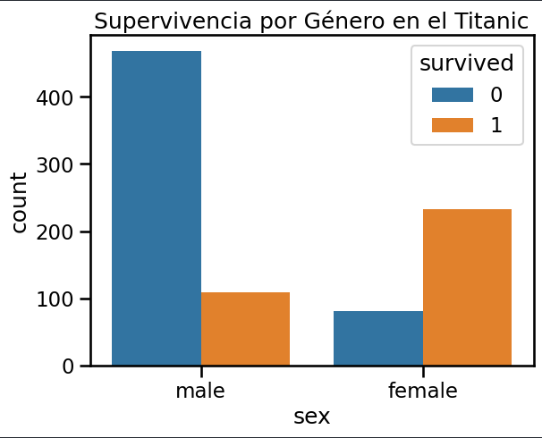

1 <div class="Analisis de datos">
2 <p>Analisis utilizando pandas, matplotlib y
3 seaborn acerca de sobrevivientes</p>
4 </div>|
import pandas as pd
import matplotlib.pyplot as plt
import seaborn as sns
# Cargar dataset de ejemplo
df = pd.read_csv("https://raw.githubusercontent.com/mwaskom/seaborn-data/master/titanic.csv")
# Explorar datos
print(df.head())
# Gráfico de supervivencia por género
sns.countplot(x="sex", hue="survived", data=df)
plt.title("Supervivencia por Género en el Titanic")
plt.show()
```
survived pclass sex age sibsp parch fare embarked class \
0 0 3 male 22.0 1 0 7.2500 S Third
1 1 1 female 38.0 1 0 71.2833 C First
2 1 3 female 26.0 0 0 7.9250 S Third
3 1 1 female 35.0 1 0 53.1000 S First
4 0 3 male 35.0 0 0 8.0500 S Third
who adult_male deck embark_town alive alone
0 man True NaN Southampton no False
1 woman False C Cherbourg yes False
2 woman False NaN Southampton yes True
3 woman False C Southampton yes False
4 man True NaN Southampton no True
<p>El objetivo de este analisis es identificar la cantidada especifica de sobrevivientes del Titanic, diferenciando entre hombres y mujeres, obteniendo de esto el siguiente grafico que representa los resultados obtenidos.</p>

<p>Según este analisis se puede interpretar que, claramente los hombres fueron las principales victimas de la tragedia, pero oculto en este grafico, a plena vista se puede determinar que también habían casi el doble de tripulacion masculina en el crucero.</p>
<h1>Ejemplo de machinelearning utilizando scikit para predecir raza de flores segun caracteristicas.</h1>
from sklearn.datasets import load_iris
from sklearn.model_selection import train_test_split
from sklearn.ensemble import RandomForestClassifier
from sklearn.metrics import accuracy_score
# Cargar dataset
iris = load_iris()
X, y = iris.data, iris.target
# Dividir en entrenamiento y prueba
X_train, X_test, y_train, y_test = train_test_split(X, y, test_size=0.2, random_state=42)
# Entrenar modelo
model = RandomForestClassifier(n_estimators=100)
model.fit(X_train, y_train)
# Evaluar modelo
y_pred = model.predict(X_test)
accuracy = accuracy_score(y_test, y_pred)
print(f"Precisión del modelo: {accuracy:.2f}")
```
Precisión del modelo: 1.00
```python
print("Predicciones del modelo:")
print(y_pred)
# Mostrar las especies reales del conjunto de prueba
print("Especies reales del conjunto de prueba:")
print(y_test)
```
Predicciones del modelo:
[1 0 2 1 1 0 1 2 1 1 2 0 0 0 0 1 2 1 1 2 0 2 0 2 2 2 2 2 0 0]
Especies reales del conjunto de prueba:
[1 0 2 1 1 0 1 2 1 1 2 0 0 0 0 1 2 1 1 2 0 2 0 2 2 2 2 2 0 0]
```python
import pandas as pd
species_names = iris.target_names # Nombres de las especies
# Imprimir predicciones y resultados reales
print("Predicciones del modelo (especies):")
print([str(species_names[i]) for i in y_pred])
print("\nEspecies reales del conjunto de prueba:")
print([str(species_names[i]) for i in y_test])
# Contar cuántas veces se predijo cada especie
predicted_counts = pd.Series([str(species_names[i]) for i in y_pred]).value_counts()
real_counts = pd.Series([str(species_names[i]) for i in y_test]).value_counts()
print("\nCantidad de predicciones por especie:")
print(predicted_counts)
print("\nCantidad de especies reales en el conjunto de prueba:")
print(real_counts)
```
Predicciones del modelo (especies):
['versicolor', 'setosa', 'virginica', 'versicolor', 'versicolor', 'setosa',
'versicolor', 'virginica', 'versicolor', 'versicolor', 'virginica', 'setosa',
'setosa', 'setosa', 'setosa', 'versicolor', 'virginica', 'versicolor',
'versicolor', 'virginica', 'setosa', 'virginica', 'setosa', 'virginica',
'virginica', 'virginica', 'virginica', 'virginica', 'setosa', 'setosa']
Especies reales del conjunto de prueba:
['versicolor', 'setosa', 'virginica', 'versicolor', 'versicolor', 'setosa',
'versicolor', 'virginica', 'versicolor', 'versicolor', 'virginica', 'setosa',
'setosa', 'setosa', 'setosa', 'versicolor', 'virginica', 'versicolor',
'versicolor', 'virginica', 'setosa', 'virginica', 'setosa', 'virginica',
'virginica', 'virginica', 'virginica', 'virginica', 'setosa', 'setosa']
Cantidad de predicciones por especie:
virginica 11
setosa 10
versicolor 9
Name: count, dtype: int64
Cantidad de especies reales en el conjunto de prueba:
virginica 11
setosa 10
versicolor 9
Name: count, dtype: int64
<h1>Web scraping sobre emol para la obtencion de titulares utilizando BeautifulSoup y pandas</h1>
import requests
from bs4 import BeautifulSoup
import pandas as pd
import re # Importamos re para expresiones regulares
# URL de Emol
url = "https://www.emol.com/"
# Obtener el contenido de la página
response = requests.get(url)
soup = BeautifulSoup(response.text, "html.parser")
# Buscar elementos con clase que comience con "col_center_noticia"
titles = [title.text.strip() for title in soup.find_all(class_=re.compile("^col_center_noticia"))]
# Guardar en un DataFrame
df = pd.DataFrame({"Title": titles})
# Mostrar primeros resultados
print(df.head())
# Guardar en CSV
df.to_csv("news.csv", index=False)
```
Title
0 1 \r\n \n\r\n Propuesta de compra y ...
1 Trump vaticina el fin de la guerra en Ucrania:...
2 Artista invitada, animadora y reina: La vasta ...
3 Miguel "Negro" Piñera internado en clínica en ...
4 Telefónica anuncia la venta de su filial argen...